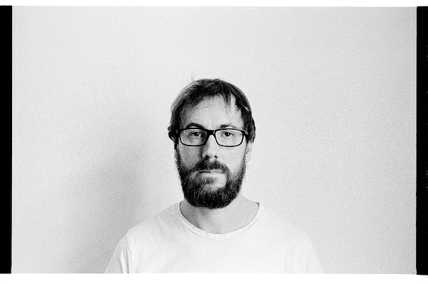

Привет и добро пожаловать!

Меня зовут Алексей Пегов, я живу в Санкт-Петербурге, работаю программистом, фотографирую на пленку, катаю на "фиксе" и горных лыжах, путешествую, читаю, прусь от джаза и авторского кино. А еще я отец двух замечательных парней — Тимура и Захара.
Записи этого блога транслируются в RSS-поток, а так же в Telegram. Кроме всего, в телеграмме есть канал с потоком моих фотографий из Flickr'а. Связаться со мной лично можно через почту iam[at]alexeypegov.com или в той же телеге @alexeypegov.